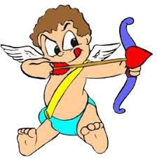

A Fateful Meeting
While reading the story below, click on the character images for peeks inside the characters' heads
Through-out highschool and college I played Dungeons and Dragons weekly
with the same group of people. After college I went off to Europe
for a year. When I returned and was between Jobs I stayed back in
my home town and picked up with the same group of friends.
This time around I got to know another member of the group better, a
young-woman a few years younger then I, and started hanging around and
chatting with her. Lets call her Stacey for the purpose of this
essay. What I didn't realize at the time was that Stacey was
conceiving a crush on me, whereas I viewed her strictly as a
friend. My birthday rolled around and Stacey decided to throw me a
birthday party. She wasn't much of a cook at the time, so she
asked a friend of hers to cook for the party. At the time the
friend was working in an insurance office and came to the party
straight from work. I turned to David, a married male member of
the group at whose house the party was being held, and asked "Who
is that?"
"Oh," he answered, "that's Shelley". After dinner, the women drifted
into one group and started talking about opera, and the guys drifted to
another corner and mostly talked about roleplay games. 
The next time I saw Shelley, it was at the weekly D&D game, which
was held at the University's student union. Shelley did not play,
but came by to say hi on her way to her cousin's birthday party on the
Union terrace. She was dressed down this time but still well
put-together.
While she was there, a "helpful" friend of mine proceeded to steal my
wallet and quietly arrange it on the table for all to see. This
included my requisite virgin's one condom, which embarrassed me
thoroughly.
The next week was the fourth of July and David gave me a call to see if
I would like to go with the group to a movie and fireworks
afterward. I asked who was coming and was told "Rebecca and I,
and Stacey, oh and maybe Shelley." I said sure.
The movie turned out to be Roger Rabbit, which was right up my areas of
expertise, and afterward we went to the park and had a pic nic.
During the pic nic we discussed the movie and I had a lot to contribute
both in terms of how this movie fit into a broader media context as
well as some guesses as to how the SFX were accomplished.
After dinner, I offered to give Shelley a backrub, and talked about
seeing another movie, the two of us. As us old folks used to do
this, I asked her for her phone number and called a few days late to
set-up the date.
25 years later, we're sill together,